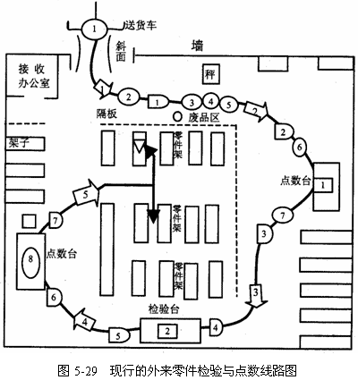
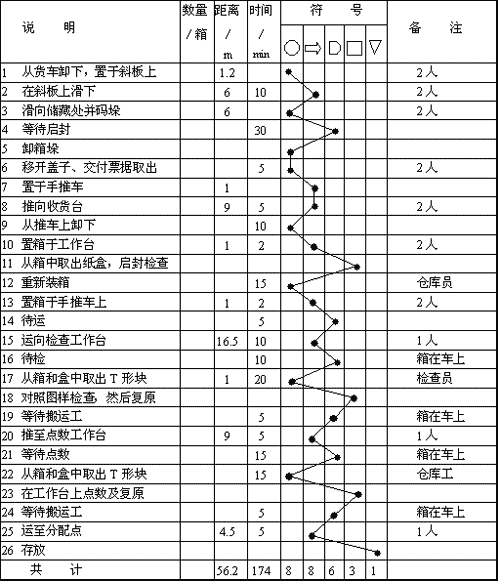
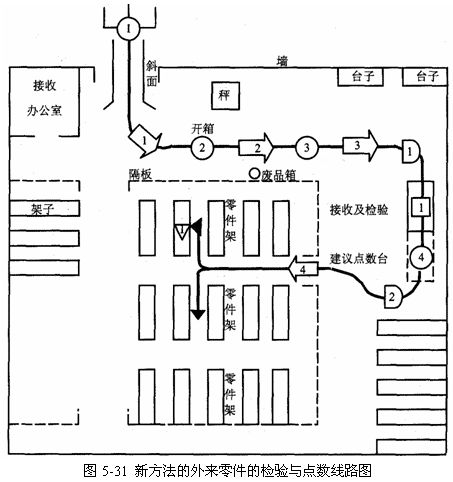
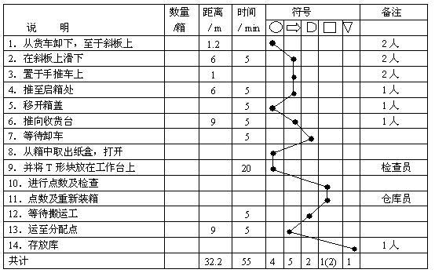

流程线路图实例分析
例如：流程线路图与流程程序图结合，用于某飞机工厂库房接收和检查某产品零件的流程线路分析。
按程序分析的基本步骤进行流程线路分析。
(1)记录
记录该飞机工厂仓库的平面布置图和现行的流程线路图，如图5-29所示。货品从送货车到零件架的运输路线以粗线表示，各种活动均用符号绘于线上。

图5-30表示其现行方法的流程程序图。其工作顺序为：从货车上卸下飞机零件的箱子(零件分别装在纸盒内)，箱子从送货车尾部的一块斜板上滑下，滑向开箱处，并一一码垛起来，等待开箱。开箱时将其搬下，取出货单，把箱子一一装上手推车，推到接收台，并放于地上，稍等片刻，开箱，零件逐件从纸盒中取出，对照送货单点数。然后放回纸盒，又将纸盒放入箱内，再把箱子搬到接收台的另一处，等待运往检查台。到检查台后箱子又放到地上等待检查。检查时又须将纸盒从箱中取出，把零件再从纸盒中逐件取出，逐件检查、测量、放回纸盒，再放回箱内。等待片刻，将箱子运往点数台。拆箱、开纸盒、点数、重新放进纸盒及箱内，再次等待，用手推车运到零件架上储存，等待运装配车间。

图5-30 现行的外来零件检验与点数流程程序图
(2)考察分析
从流程图中可以看到，零件箱在运往零件架的路上
转了一圈，从流程程序图上则可以看到物品进仓库的各个程序，采用提问技术，认真分析考察，提出以下问题。
问：第二个操作是码垛，第三个操作是卸箱，既然要卸箱为什么要先码垛起来?
答：因为卸车比办接收快，为避免地上到处是箱子，只好先码垛起来。
问：接收、检查、点数的地方为什么离得那么远?
答：原安置时未统筹考虑，无意安排的。
问：有无更好的办法?
答：可以放在一起。
问：应放在何处?
答：可放在接收台处。
问：为什么物品运输到零件架上这样远?
答：因为检查台离储存处（零件架）的门较远。
按照提问技术，还会发现许多问题。
(3)改进方案
根据考察分析的结果设计新的方案。图5-31、图5-32是改进后的流程线路图和流程程序图。


根据图可以看出，在接收台对面开一个新门，缩短检查台与零件架运输线路。箱子从货车滑下滑板，直接放到手推车上，并送到开箱处，就在车上开箱，并取出送货单。然后运到收货台，等片刻，打开箱子，把零件放到工作台上，对照送货单点数并检查。检查与点数的工作台现已布置在收货台旁，这样可以用手传递零件来检查、测量和点数。最后，把零件放回纸盒，重新装箱，运入仓库放置于零件架上。
通过新旧方法比较，流程程序图中，操作由10次减为4次，检查由3次减为1次，运输由5次减为4次，等待由6次减为2次，运输路线由